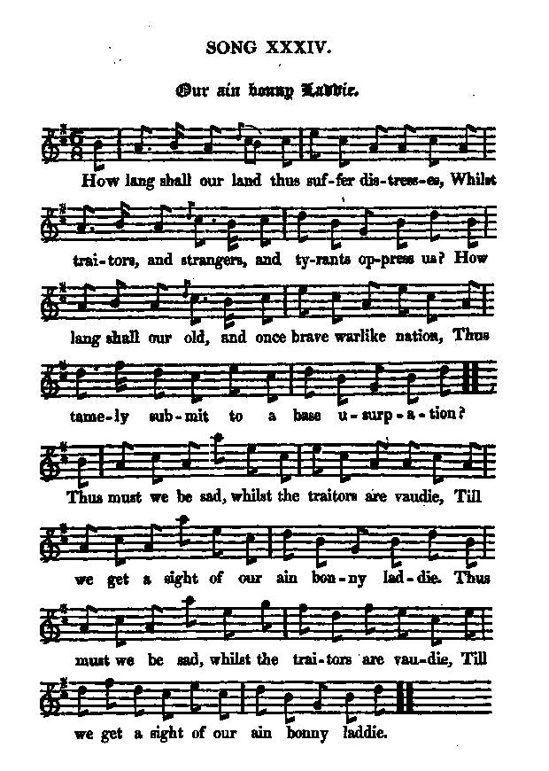
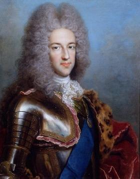

Our ain bonny Laddie
Notre beau jeune homme
by/par William Meston (1688 - 1745)
From "The True Loyalist", p. 11, 1779
and Hogg's "Jacobite Relics" 2nd Series N°34, 1821
Tune - Mélodie
"John Hay's bonny Lassie"
from Hogg's "Jacobite Relics" 2nd Series N°34, 1821
Sequenced by Christian Souchon
|
To the tune:
"There is a copy of this song in Sir Walter Scott's Jacobite Collection, and in several others that I have seen. But this one is taken from Mr Hardy of Glasgow's Mss, where it is said to have been composed by Professor Meston... I do not know anything of the tune save that it is not much worth." (?) Hogg in "Jacobite Relics, 2nd series" (1821) The tune is to be found in McGibbon's Scots Tunes , book I, Page 7, (c. 1746) and in the Gillespie MS of Perth , 1768. To the lyrics: In Hogg's "Relics", the fourth stanza is slightly different from the original (the rest being faithfully rendered): 4. Our vales shall rejoice, our mountains shall flourish; Our church, that's oppressed, our monarch will nourish; Our land shall be glad, but the Whigs shall be sorry, When the king gets his own, and Heaven the glory. The rogues etc. |
 |
A propos de la mélodie:
""Il existe un exemplaire de ce chant dans le recueil de chants jacobites de Walter Scott, et je l'ai trouvé également dans d'autres collections. Mais la présente version provient de la collection de manuscrits de M. Hardy de Glasgow, et elle mentionne le compositeur: le Professeur Meston... Je ne sais rien à propos de la mélodie, si ce n'est qu'elle ne vaut pas grand chose." (?) Hogg dans "Reliques Jacobites, 2ème série" (1821) La mélodie se trouve dans les "Scots Tunes" de McGibbon, livre I, Page 7, (c. 1746) et dans le manuscrit Gillespie de Perth , 1768. Concernant le texte: Dans les "Reliques" de Hogg, le 4ème couplet diffère légèrement de l'original (le reste étant reproduit fidèlement): 4. Fleurissent les monts, chantent les vallées! Le roi soutient notre église oppressée! La chance nous sourit, aux Whigs adverse! Le roi revenu, le Ciel est en liesse! Un jour etc. |

|
OUR AIN BONNY LADDIE [1]
1. How long shall our land thus suffer distresses, Whilst traitors and strangers and tyrants oppress us? How lang shall our old and once brave warlike nation, Thus tamely submit to a base usurpation? (twice) Still must we be sad, whilst the traitors are wadie, 'Till we get a sight of our ain bonny laddie. Still must we be sad, whilst the traitors are wadie, Till we get a sight of our ain bonny laddie. (twice) 2. How lang shall we lurk, how lang shall we languish, With our faces dejected, and our hearts full of anguish ? How lang shall the W[hig]s, perverting all reason, Call honest men rogues , and loyalty treason ? Still must we be sad, whilst the traitors are wadie, Till we get a sight of our ain bonny laddie. Still must we be sad, &c. 3. O Heavens, have pity! with favour present us; Rescue us from strangers that sadly torment us, From Atheists, and Deists, and W[higgi]sh opinions; Our K[in]g return back to his rightful dominions: Then rogues shall be sad, and honest men wadie, When the throne is possess'd by our ain bonny Laddie Then rogues shall be sad, &c. 4. The church, that's oppressed, our Monarch shall cherish; The land shall have peace, the Muses shall flourish; Each heart shall be glad, but the W[hig]s will be sorry, When the K[in]g gets his own, and JEHOVAH the glory. Then rogues shall be sad, but the honest men wadie, When the throne is possess'd by our ain bonnie laddie. The rogues shall be sad, &c. [2] Source: "The True Loyalist or Chevalier's Favourite, being a collection of ELEGANT SONGS never before printed, also several other LOYAL COMPOSITIONS wrote by eminent hands" printed in the year 1779. |
 The Chevalier de Saint George c. 1720 by Antonio David (1648 - 1730) |
NOTRE BEAU JEUNE HOMME [1]
1. Combien de temps encor cette détresse, Dont étrangers et tyrans nous oppressent? Combien de temps, O nation valeureuse, Subiras-tu l'usurpation honteuse? (bis) Vois notre tristesse et la joie des traîtres, Beau jeune homme, empresse-toi de paraître! Vois notre deuil et la joie de ces traîtres, Beau jeune homme, empresse-toi de paraître! (bis) 2. Combien de temps faudra-t-il qu'on se terre Languissants, peureux, le visage austère? Le whig au mépris de nos valeurs traite De vaurien le juste, encense le traître. Vois notre deuil et la joie de ces monstres, Beau jeune homme, il est temps que tu te montres! Vois notre deuil etc. 3. Ciel, prends pitié! Exauce nos prières, De la botte étrangère nous libère! Athées, déistes et Whigs de tout poil: Le retour du roi guérirait ce mal. Jour de joie pour nous, de deuil pour les traîtres, Où le trône t'est rendu jeune maître! Jour de joie... 4. Le roi soutient notre église oppressée! La paix règnant, les Muses honorées, Tous sont heureux, les Whigs font grise mine: Quand règnent le Roi, le Dieu légitimes! Un jour de liesse, au grand dam des traîtres, Où le trône t'est rendu jeune maître! Un jour de liesse... [2] (Trad. Christian Souchon(c)2010) |
|
[1]
Our ain bonny laddie
: refers to the 28 year old James Francis Stewart since the song was composed in 1716, as stated in the "True Loyalist".
[2] "The author of this song was William Meston (1688 - 1745) of Midmar in Aberdeenshire, some time preceptor to the young (10th) Earl Marischal and his brother, the celebrated Marshall Keith (*). By their interest, he was promoted to the professorship of philosophy in Marischal College (Aberdeen), but he lost it in consequence of following their fortunes in 1715. [As a compensation, he was made governor of Dunotter castle by the earl Marischal]. After the battle of Sherrifmuir, till the Act of indemnity was passed, he lurked with a few fugitive associates, for whose amusement he wrote several burlesque poems, to which he gave the title of Mother Grim's Tales . The Countess Marischal of Elgin supported him during the decline of his latter days, till he removed to Aberdeen, where he died of a languishing distemper. He was a man of wit and pleasantry in conversation, and of considerable attainments in classical and mathematical knowledge." Hogg in "Jacobite Relics, 2nd series" (1821), quoting Campbell William Meston is, apart from Anderton, the unfortunate author of England's New Psalm , the only "eminent hand" named in the "True Loyalist" (1779): "The BONNIE LADDIE, composed by Mr William Meston, one of the Regents of the Marischal-College in Aberdeen, 1716, when skulking in the Cabrach, Aberdeen-shire." (*) James Francis Edward Keith (1696 – 1758) was a famous Scottish soldier and Prussian field marshal. He took part in 1715 and 1719 in the abortive risings in support of James Stuart, which compelled him to seek security on the continent. After a few years spent in obscurity in Paris and Madrid, he obtained a colonelcy in the Spanish army. He then (1728) commanded a Russian regiment and obtained the rank of general and played an outstanding part in the Russo-Swedish war (1741 - 1743). In 1747 he offered his services to Frederick II of Prussia who gave him the rank of field marshal in 1749. He was employed in high command and added to his Russian reputation on several occasions during the Seven Years' War: Pirna, Lobovitz, Prague, Leipzig, Rossbach, Bohemia. He was killed at Hochkirch in the Lausitz. He is buried in Berlin. |
[1]
Notre beau jeune homme
: se rapporte à Jacques François Stuart, qui était âgé de 28 ans en 1716, date de la composition de ce poème (selon l'indication du "True Loyalist").
[2] "L'auteur de ce chant est William Meston , de Mid-Mar en Aberdeenshire qui fut un temps précepteur du jeune 10ème Comte Marischal et de son frère, le célèbre maréchal Keith (*). Grâce à leur appui, il put faire ses études et devenir professeur de philosophie au Marischal College d'Aberdeen. Mais il fut renvoyé pour avoir partagé les convictions de ses protecteurs en 1715 [lesquels en firent, à titre de compensation, le régisseur de leur château de Dunotter]. Après la bataille de Sherrifmuir, et jusqu'à ce que l'Acte d'Indemnité soit adopté, il resta caché avec quelques autres fugitifs. Pour les distraire il composa plusieurs poèmes burlesques, auxquels il donna le titre de "Contes de ma mère Grimm" . La comtesse de Marischal d'Elgin subvint à ses besoins vers la fin de sa vie, jusqu'à ce qu'il se retire à Aberdeen, où il mourut de la maladie de Carré. C'était un homme spirituel et d'un commerce agréable, dont les connaissances littéraires et mathématiques étaient considérables." Hogg dans "Jacobite Relics, 2ème série" (1821), citant Campbell William Meston est, outre Anderton, le malheureux auteur du Nouveau Psaume pour l'Angleterre , la seule "main experte" citée dans le "Vrai Loyaliste" (1779): "LE BEAU JEUNE HOMME, composé par M. William Meston, l'un des recteurs du Collège Marischal d'Aberdeen, 1716, alors qu'il se cachait au Cabrach, Aberdeen-shire." (Moray) (*) James Francis Edward Keith (1696 - 1758) fut un condottière écossais et un maréchal prussien fameux. Il prit part en 1715 et 1719 aux soulèvements avortés en faveur de Jacques François Stuart et jugea plus sûr de s'exiler sur le continent. Après quelques années passées dans l'anonymat à Paris et Madrid, il obtint un brevet de colonel dans l'armée espagnole, puis, en 1728, le commandement d'un régiment russe qui lui permit de parvenir au rang de général. A ce titre, il joua un rôle décisif dans la guerre entre la Russie et la Suède (1741 - 1743). En 1747 il offrit ses services à Frédéric II de Prusse qui le créa maréchal-des-camps en 1749. Dans cette fonction de haut commandement, il acquit de nouveaux titres de gloire pendant la guerre de Sept ans: Pirna, Lobovitz, Prague, Leipzig, Rossbach, Bohème. Il mourut à Hochkirch en Lusace. Il est enterré à Berlin. |
|
|
|